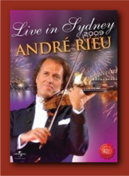

|
Live In Sydney (2009)
|
 |
| Filmed in October 2009 during
André Rieu’s triumphant Australian return, this
DVD features all of Andre’s famous trademarks –
glorious music, beautiful costumes, enthralled
audiences and plenty of wonderful surprise
guests including Australia’s best-known radio
personality Alan Jones and the first lady
herself, Dame Edna Everage. |
Where to buy?
|
|
DVD Tracklist
- Seventy-Six Trombones (Willson)
- Overture: Carmen (Bizet)
- Intermezzo Sinfonico (from Cavalleria Rusticana)
(Mascagni)
- La danza (Rossini) featuring The Platin Tenors
- Torna a Surriento (de Curtis) featuring The
Platin Tenors
- Gold and Silver (Lehár)
- Ben (Scharf/Black)
- The Earth Song (Michael Jackson) featuring
Carmen Monarcha, Australian Girls Choir, National
Boys Choir of Australia
- España Cañi (Marquina)
- I could have danced all night (from My Fair
Lady) (Loewe) Mirusia Louwerse, Carmen Monarcha,
Kalki Schrijvers, The Platin Tenors
- With a little bit of luck (from My Fair Lady)
(Loewe) featuring Mirusia Louwerse, Carmen Monarcha,
Kalki Schrijvers, The Platin Tenors
- I am Australian (B. Woodley / D. Newton)
featuring Alan Jones
- E lucevan le stelle (from Tosca) (Puccini)
featuring The Platin Tenors
- Da geh ich zu Maxim (from The Merry Widow) (Lehár)
featuring The Platin Tenors
- Volga Song (Lehár)
- Memory (from Cats) (Lloyd Webber) featuring
Mirusia Louwerse
- Waltzing Matilda (Cowan) featuring Mirusia
Louwerse
- On the beautiful blue Danube (J. Strauss II)
- Ode to Joy (Beethoven) featuring Mirusia
Louwerse, Carmen Monarcha, Kalki Schrijvers, The
Platin Tenors
- Radetzky March (J. Strauss I)
- Strauss & Co. (J. Strauss II) A bright young man
- The Blue Danube - Vienna Blood - Lips are sealed
(medley)
- Libiamo (Drinking Song) (from La Traviata)
(Verdi)
- Adieu, mein kleiner gardeoffizier (Stolz, Reisch)
featuring Mirusia Louwerse, Carmen Monarcha, Kalki
Schrijvers, The Platin Tenors
- Introducing Dame Edna Everage
- Neighbours: theme (Hatch, Trent) featuring Dame
Edna Everage
- Dame Edna Everage speaks…
- Hungarian Dance No. 5 (Brahms) featuring Rupert
Buesst
- Dame Edna Everage speaks…
- I Still Call Australia Home (Allen) featuring
Dame Edna Everage
- Advance Australia Fair (McCormick)
|
|